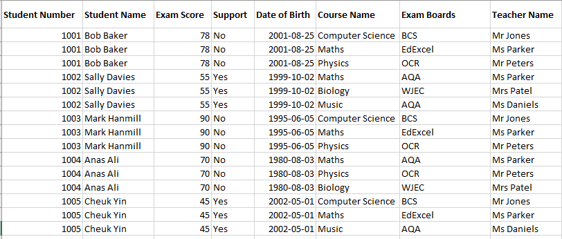
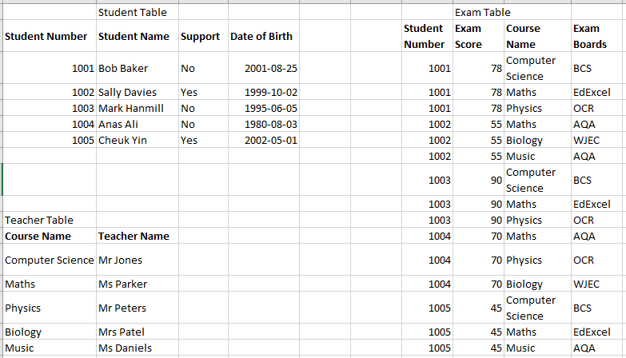
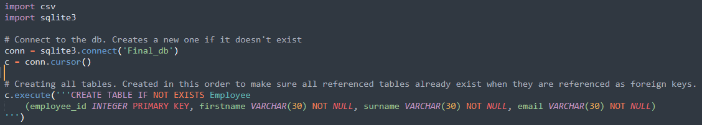

Unit 1-3 Discussion
Discussing this topic with my classmates has helped me identify some of the challenges posed by data generated by IoT and understand the best approaches for solving these challenges.
While it was pointed out that the use of IoT suggests data should be well defined and therefore ready for analysis, there are often external factors which compromise the integrity of the data (Ardagna, 2021). This is an issue that I often come across in my work as a data analyst, where IoT systems are in place to gather data with the expectation that it can be easily used. After receiving the data it is clear that there are inconsistencies, and that more data cleaning is still required. I’ve been seeing this mostly with GPS coordinates in areas with tall buildings due to reflections off of the buildings, and in cases where infrared sensors are used to count the number of people passing a point due to aging hardware or large volumes of people clumped together.
As Mika correctly identified, manual correction of these big datasets will be very time consuming and costly (Bobluski & Kubanek, 2022). Using a statistics-based approach for cleaning these datasets can help save on both time and cost and is especially useful in ensuring that the data cleaning happens as early as possible without additional manual effort. This allows it to be used in real-time reporting, which can provide great value to operations in being able to understand the current state of their operation.
The best statistic-based approach will vary depending on the dataset itself, but spending the time to understand the problem and find an automated data cleaning approach will help prevent future costly and time-consuming manual workload.
References
Bobluski, J. & Kubanek, M. (2022) A method of cleaning data from IoT devices in big data systems. IEEE International Conference on Big Data. 2022 IEEE International Conference on Big Data (Big Data), 6596-6598. Available From: DOI: 10.1109/BigData55660.2022.10020651
Ardagna, C.; Asal, R.; Damiani, E.; Ioini, N.; Elahi, M.; Pahl, C.. (2021). From Trustworthy Data to Trustworthy IoT: A Data Collection Methodology Based on Blockchain. ACM Trans. Cyber-Phys. Syst. 5, 1, Article 11 (January 2021), 26 pages. Available From: https://doi-org.uniessexlib.idm.oclc.org/10.1145/3418686
Unit 3 Web Scraping Activity
The purpose of this task was to build a web scraper using Python to find the word "Data Scientist" and save the results in a json file. My web scraper successfully parses the page looking for the string "data scientist" with case insensitivity, exporting the entire string along with its parent tag to a json file.
Writing this script was my first exposure to making http requests and parsing the data on a webpage. I expect that this skill will be extremely valuable in the future, due to the large amounts of data stored online. To advance my script further, a next step could be to split the text into sentences to retrieve all sentences containing the keyword instead of the entire string.
View the web scraper hereUnit 4 Data Cleaning Activity
Data cleaning is a crucial step to any project. During the data cleaning process we must find and correct any missing data, inconsistencies, or any errors that exist within the data set. If the process is skipped, any result obtained from working with the dataset is subject to the influence of inaccurate data. In this unit, we followed the data cleaning activity in the ebook "Data Wrangling With Python" as listed in the lecturecast. This unit focused on the use of the pandas library to import and clean a dataset. In this activity we identified duplicate rows and missing values from the desired columns in the dataset. This exercise was useful in practicing programming with python, while learning how to clean and transform a pandas dataframe.
Unit 6 Database Design Proposal
In this assignment our task was to propose a database design Uni Prep Ltd based on their requirements to store student, staff, and course related data.
My work in the project involved creating the proposed design based on the research and surveys completed by my team members. I was able to apply the normalisation techniques learned in the Unit 6 lecturecast and readings to propose a database design that met all client requirements. While doing this, I needed to consider all possible uses for the databases, such as how new students or classes could be added, how to efficiently select a set of information, and how personal information could be removed from the database with this design.
Tutor Feedback:
Knowledge and understanding of the topic/ issues under consideration An outstanding demonstration of knowledge and understanding, displaying originality and an advanced understanding of the topic relevant to the work. The report is very precise with defining the application, listing client requirements, then offering a suitable design. The use of user survey to guide the design is excellent. Application of knowledge and understanding An excellent demonstration of the application of knowledge and understanding to address the requirements including a real-world application. The application is a database for a private education company, and there are good insights requirements, reasoning, data pipeline tasks, and design. However, the model design is simply depicted in Figure 1 and no real explanation of that figure is given - although a main requirement. Criticality A excellent demonstration of critical analysis throughout, with very good linking between theory and practice. There is a good list of references in Harvard style that are well cited to focus arguments where appropriate. Structure and Presentation (as detailed in the assessment guidance) A very good structure and presentation but has some issues against the guidelines. The report redresses all assessment requirements. The English grammar and spelling are sound. The word count is within limits at 1100 (excluding references and appendix). There are some anomalies in formatting the report, for example number of line spacing that ruin the presentation! Please consider paying attention to such fine details.
View the full report hereTeam Meeting Notes
Unit 7 Normalization and Data Build Task
In this unit we were provided two tasks: Normalize a table provided in excel, an then use it to build a relational database with linked tables. In the normalization task we were required to transition the table shown in Figure 1 through the three normal forms.

First making sure every value is atomic and each row is unique brings us to the first normal form, shown in Figure 2.
Next we make sure that every non-primary key column is related the primary key to bring it to the second normal form, shown in Figure 2. In this image Student number is the primary key of the student table, Course name is the primary key of the teacher table, and Student Number and Course Name are the primary key for the Exam table.
The third form is to ensure that every non primary key column is dependant only on the primary key itself. In this example, the table is already in the third normal form as each non-primary key element in the tables is only dependent on the primary key. Completing these steps before creating a database is important so that relationships between tables primary keys and the corresponding foreign keys are all correct. This ensures the integrity of the data when querying the database.
Unit 8-10 Discussion
With collecting and storing large amounts of data becoming easier by the year, many people are becoming more concerned about how their personal information can be stored and used. The GDPR (Regulation, 2016/679) is a framework implemented in the EU to regulate data protection practices between varying countries and organizations. The GDPR applies to anybody who is processing or controlling personal data (Vigt & Van Dem Bussche, 2017).
In Canada, PIPEDA is the legislation in place to protect personal information and was put in place as a response to the 1995 EU Data Protection Directive (Bolca, 2020). Unlike the GDPR which applies to all bodies who process or control personal data, PIPEDA only applies to the commercial use of personal information (Nisker, 2006). Therefore, Public bodies are not included within the scope of PIPEDA, and instead fall under a provincial Freedom of Information and Privacy Act. The Freedom of Privacy and Information Act covers the access and privacy of information for the public sector, and is often used to increase transparency and accountability for government agencies (Berzins, 2014). The Freedom of Information and Privacy Act allows any individual to request any non-sensitive data from a government agency, and prevents the agency from revealing personal information.
References
Berzins, C. (2014). Ontario's freedom of information and protection of privacy act after 25 years: critical assessment. Advocates' Quarterly, 43(1), 80-110. Available from https://heinonline-org.uniessexlib.idm.oclc.org/HOL/Page?handle=hein.journals/aqrty43&id=84&collection=journals&index=
Bolca, T. (2020) "Can PIPEDA ‘Face’ the Challenge? An Analysis of the Adequacy of Canada’s Private Sector Privacy Legislation against Facial Recognition Technology" Available From https://digitalcommons.schulichlaw.dal.ca/cgi/viewcontent.cgi?article=1262&context=cjlt
European Parliament and of the Council (2016). GDPR Regulation at: Regulation (EU) 2016/679. Available From: https://eur-lex.europa.eu/legal-content/EN/TXT/?qid=1532348683434&uri=CELEX:02016R0679-20160504
Nisker, J. (2006). Pipeda: constitutional analysis. Canadian Bar Review, 85(2), 317-344. Available from https://heinonline-org.uniessexlib.idm.oclc.org/HOL/Page?collection=journals&handle=hein.journals/canbarev85&id=317&men_tab=srchresults
Voigt, P. and Von Dem Bussche, A. (2017). Scope of Application of the GDPR. In: , 9–30. Available from https://link-springer-com.uniessexlib.idm.oclc.org/chapter/10.1007/978-3-319-57959-7_2
Unit 11 Database Executive Summary
In this assignment, we were required to provide an executive summary on the final database build from Unit 6. For this assignment I used Pythons sqlite3 library to create the proposed database from Unit 6, and load it with a sample dataset for testing. This Python script can be found here: builddbpython.py. While building this python script I followed closely along with my normalization task and data build task discussed in unit 7.
After the database was created I wrote some sample queries to perform some of the actions highlighted in the requirements. These covered adding, deleting, slecting, or updating data from the database. This script can be found here: db_queries.py
Our final build followed closely along the initial proposal in terms of design, however we switched from an azure build to SQlite as it was more practical for this assignment. We expect that once the client is able to provide a real sample dataset that some changes to the proposed structure may be required
View the final report hereTeam Meeting Notes
Individual Reflection
Throughout this module we learned how to analyze and solve data wrangling problems, and then how to design and build a proper database with our data. This work was done primarily using Python, a language that we had some exposure to from previous modules.
Data scraping from the web was a challenging process for me, as it requires some knowledge in HTML and webpage design. I consider it an important step to learn, as there are vast amounts of data stored on the web and not being able to access it would be a huge limitation on the work I can do. Learning the beautiful soup library in Python and following the guidance in our core Ebook (Sarkar & Roychowdhury, 2019), I was able to build a basic web scraper for the unit 3 activity. There is plenty of space for me to improve on this method and extract more relevant data, such as splitting the string into sentences to only scrape related data.
In units 4 and 5 we learned how to clean and transform a dataset with the pandas library. As this has been touched on in previous modules, I was much more confident in my ability to find duplicate, erroneous, and missing data within a pandas dataframe and then correct it. This stage is crucial to any process, as inaccurate data can effect the results of any analysis performed on the data set. Missing this step or not properly cleaning the data will likely lead to a required data clean later on, which may be more difficult if the data is already populated into a database and being used, causing inconsistencies between studies (Huxley et. al, 2020).
Learning database normalization helped me to better understand proper database design. In the 3rd normal form, each non primary key in a table should be dependent only on the primary key of that table. This helped me to understand the reasoning behind how the tables are chosen in a relational database, and how they are linked together. Using Python and Sqlite, we learned how to build a database and load it with data. With some experience in both Python and SQL, this part of the process was fairly straightforward after all of the planning and normalization had been completed. These concepts have increased my confidence in my ability to take any dataset and properly normalize it, then create the final database.
Learning more about data compliance and security was particularly interesting to me, especially the research carried out for the second discussion topic. While throughout the program we have discussed the GDPR and its impact regarding personal data, this helped me to see how it is handled in other places, specifically for me at home in Canada. While I found Canada’s PIPEDA legislation to be very similar in scope for most areas, it is only applicable to commercial activity (Nisker, 2006), unlike the GDPR. Public services are handled differently in each province base on the Freedom of Information and Privacy Act (Berzins, 2014), and understanding how these two legislations work together is important to know before performing in a role with sensitive data here in Canada.
For our project, we proposed a database design for Uni Prep Ltd based on their requirements to store student, staff, and course related data. My team members were both experienced and knowledgeable about the field, and worked to develop the requirements for our proposal. My role in the team was to come up with the final design of the relational database based on the requirements and feedback gathered from my group members. I was able to apply everything I learned throughout the data normalization unit to ensure that the proposal was in the 3rd normal form, and that all relationships between the tables were one to many relationships and wouldn’t cause any inconsistencies. This is seen by our proposed structure in Figure 1.

For the database executive summary, I was responsible for building the proposed database, and preparing queries to test it and perform some of the tasks listed as requirements in our proposal. I was able to use Python and the sqlite3 library to load the sample data into our database, as discussed in the core Ebook (Sarkar & Roychowdhury, 2019). Figure 2 shows the creation of one of the tables using this method.
When testing the build, I found that I needed to consider when NULL values should be allowed in the database. Enforcing that new data being added is complete can help to maintain data integrity (Gueta & Carmel, 2016), however for our client I found that there were times that they might want to add a student to the database before receiving all of there information, such as proof of academic qualification. Using this logic all columns were labelled as “NOT NULL” except for those where it was considered reasonable for that data to arrive at a later time than the rest of the information (De Tre et. Al, 2008). We found that the database performed as expected, with Figure 3 showing an example of a student being added, updated, and removed from the student table.

Working with my team in this module was a positive experience for me. I felt much more comfortable with the technical side of the work (designing, building, and testing the database) as I have more experience in the area, so these were the tasks that I focused on. This was a good experience in learning how to divide up a projects workload based on the teams skills and experience, as my other group members were able to greatly contribute with background information on the field and requirements, and data compliance and security aspects. I feel that I was able to develop some of my leadership skills with this group, however I know that is an area where I still need to grow so that I can feel comfortable taking organizing and leading a larger group.
References
Berzins, C. (2014). Ontario's freedom of information and protection of privacy act after 25 years: critical assessment. Advocates' Quarterly, 43(1), 80-110. Available from https://heinonline-org.uniessexlib.idm.oclc.org/HOL/Page?handle=hein.journals/aqrty43&id=84&collection=journals&index=
De Tré, G., De Caluwe, R. and Prade, H.. (2008). Null values in fuzzy databases. Journal of Intelligent Information Systems, 30 (2), 93–114. Available from https://doi.org/10.1007/s10844-006-0021-0
Gueta, T., Carmel, Y. (2016) Quantifying the value of user-level data cleaning for big data: A case study using mammal distribution models, Ecological Informatics, Volume 34, Pages 139-145, ISSN 1574-9541, Available From https://doi.org/10.1016/j.ecoinf.2016.06.001
Huxley, K. (2020) ‘Data Cleaning’, in Atkinson, P., Delamont, S., Cernat, A., Sakshaug, J.W., & Williams, R.A. (eds) Quantitative Data Preparation & Secondary Data Analysis. SAGE Research Methods Foundations. Available From: https://doi.org/10.4135/9781526421036842861
Nisker, J. (2006). Pipeda: constitutional analysis. Canadian Bar Review, 85(2), 317-344. Available from https://heinonline-org.uniessexlib.idm.oclc.org/HOL/Page?collection=journals&handle=hein.journals/canbarev85&id=317&men_tab=srchresults
Sarkar, T. & Roychowdhury, S. (2019). Data Wrangling with Python. 1st ed. Packt. Available From https://essexonline.vitalsource.com/reader/books/9781789804249/epubcfi/6/8[%3Bvnd.vst.idref%3DC11065_01_Epub_IG_NT]!/4[C11065_01_Epub_IG_NT